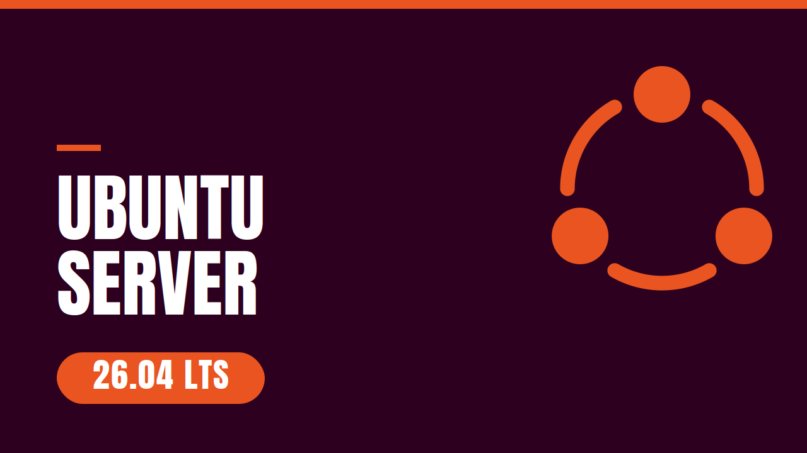
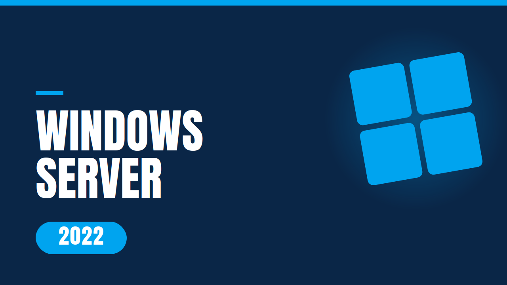

Sobre mí
Administrador de Sistemas con experiencia en entornos on-premise y una creciente orientación hacia tecnologías cloud. Este portfolio reúne series de videotutoriales donde documento procesos de administración de sistemas paso a paso — la primera, dedicada a Windows Server 2022, con más ámbitos IT por llegar.
Series
Series de videotutoriales donde documento procesos de administración de sistemas paso a paso.

Ubuntu Server 26.04 LTS
Instalación, configuración y administración de Ubuntu Server 26.04 LTS paso a paso.
Ver vídeos →
Windows Server 2022
Configuración y administración paso a paso: Active Directory, DHCP, DNS, recursos compartidos, copias de seguridad, GPOs y mucho más.
Ver vídeos →Aptitudes técnicas
Sistemas y administración
- Despliegue y administración de servidores Windows Server y Linux Azure: Azure Virtual Machines
- Gestión de dominios mediante Active Directory y políticas de grupo (GPO) Azure: Microsoft Entra ID / Intune
- Configuración de servicios de red (DNS, DHCP) y virtualización con VMware/Hyper-V Azure: Azure DNS, Azure VNet
Redes e infraestructura
- Diseño y configuración de infraestructura de red (routers, switches, puntos de acceso)
- Instalación de cableado estructurado LAN/WAN
Soporte técnico y hardware
- Resolución de incidencias hardware/software en entornos de producción
- Soporte técnico Help Desk (remoto y presencial)
- Montaje y mantenimiento de equipos
Cloud y desarrollo
- Integración de IA generativa (API de Claude) en aplicaciones web
- Backend serverless con Cloudflare Workers
- Gestión segura de credenciales y control de acceso (CORS)
- Automatización con Claude Code
Formación académica
Grado Superior
Administración de Sistemas Informáticos en Red
INS La Ferrería
Grado Medio
Sistemas Microinformáticos y Redes
INS La Ferrería
Certificaciones
Microsoft Certified: Azure Fundamentals (AZ-900)
En cursoContacto
- Email: albertlopezespinosa@gmail.com
- LinkedIn: linkedin.com/in/alopezespinosa
- Ubicación: Montcada i Reixac, Barcelona
Abierto a nuevas oportunidades
Si tienes un proyecto o posición que encaje con mi perfil, no dudes en escribirme.